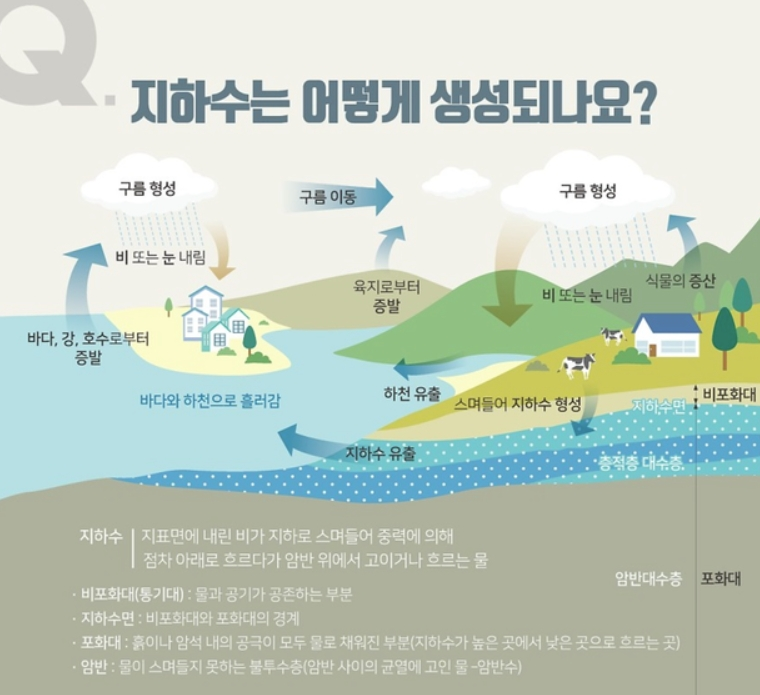
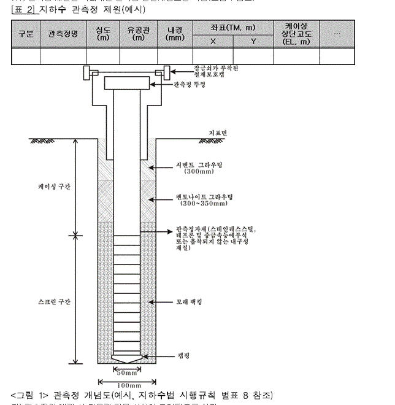

Groundwater & Geothermal Energy
30년간 축적된 시공 경험과 최첨단 암반 천공 기술을 바탕으로
가정용, 농업용, 공업용 지하수 공사를 완벽하게 수행합니다.
0년+
현장 시공 기술 경력
0건+
지하수 천공 및 개발 실적
0%
지자체/관공서 준공 승인율
0시간
긴급 수중모터 A/S 지원
최적의 수문 조사 및 수질 검사로 환경 친화적이고 지속 가능한 지하수 솔루션을 제공합니다.
가정용 소용량 개발부터 공장 및 농업용 대형 암반 관정 공사까지 깊은 심도까지 정밀 천공합니다.
수중모터 펌프 신설 및 교체, 인버터 펌프 설치, 모터 제어반(컨트롤박스) 수리를 정밀 진단합니다.
지하수 영향조사 작성, 에어징(써징/청소) 작업 및 군부대/관공서 폐공 원상복구를 철저히 진행합니다.
지층 구조별 케이싱 설치 및 깊은 암반 대수층 파쇄대 착정 구조
토사층 구간에 고강도 케이싱을 삽입하고, 시멘트/벤토나이트 이중 그라우팅을 시행하여 지표 오수 유입을 차단합니다.
초고압 에어 컴프레셔 장비로 수평 및 수직 암반 균열(파쇄대)까지 정밀 굴착하여 풍부한 풍량의 수자원을 확보합니다.
자동 수위 감지 인버터 및 동파 방지 밀폐 보호통을 표준으로 설치하여 사계절 안정적인 용수 공급을 보장합니다.
용도와 현장 조건에 맞는 예상 공사 범위를 대략적으로 계산해 보세요.
약 200 ~ 250 만원
* 지질 상태 및 현장 위치에 따라 정밀 인허가 비용이 다를 수 있습니다.굴착깊이 100m / 취수계획량 20㎡/일 / 1.0HP 동력장치 설치 및 준공 승인 완료
군 시설 표준 규격에 맞춘 재사용 003호 직할부대 심정 원상복구 및 폐공 수행
양수능력 100㎡/일 (5.0HP) / 대수층 정밀 굴착 및 오염방지 그라우팅 준공
Tech Library

강수가 지표면으로 스며들어 비포화대와 포화대를 거쳐 불투수성 암반층 위에 고이는 정밀 수문 순환 매커니즘을 분석합니다. 정확한 지질 분석으로 최적의 대수층 관정 위치를 선별합니다.

지하수 오염 방지 및 수질 보존을 위한 규격화된 그라우팅 시공을 적용합니다. 케이싱 구간, 스크린 구간, 벤토나이트/시멘트 그라우팅으로 상부 오염 물질의 유입을 철저히 차단합니다.
지하수 개발 및 공사 관련 주요 문의사항입니다.